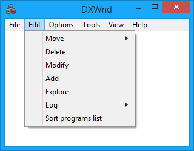

|
Move |
Moves the selected entry in the list. |
|
Delete |
Deletes the selected application entry after confirmation. (Shortcut key: Delete) |
|
Modify |
Opens the configuration panel to set/change the selected program settings. |
|
Add |
Inserts a new application entry in the list. The configuration panel opens immediately to let you define the initial settings. (Shortcut key: Insert) |
|
Explore |
Opens the File Explorer to the folder where the application is located. This is a shortcut to something usually useful. |
|
Log |
View - If the selected application has a dxwnd.log log file, this option opens it. For this to work, you'll first need to associate the log file extension with your preferred text editor. Delete - If the selected application has a log file, this option deletes it. |
|
Sort programs list |
Arranges the program list in ascending alphabetical order (sort). |